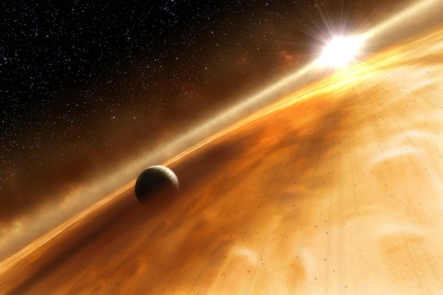
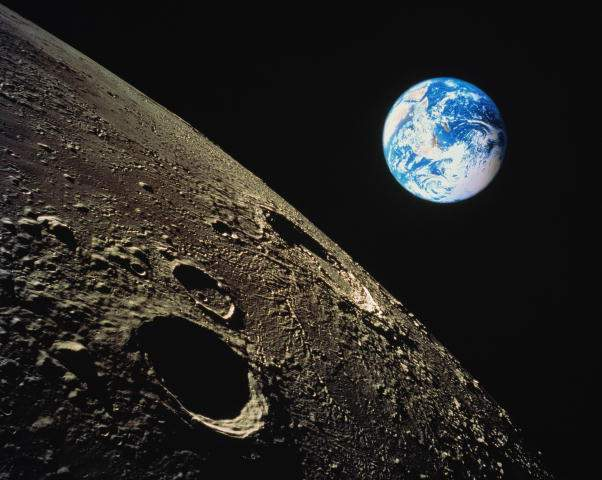
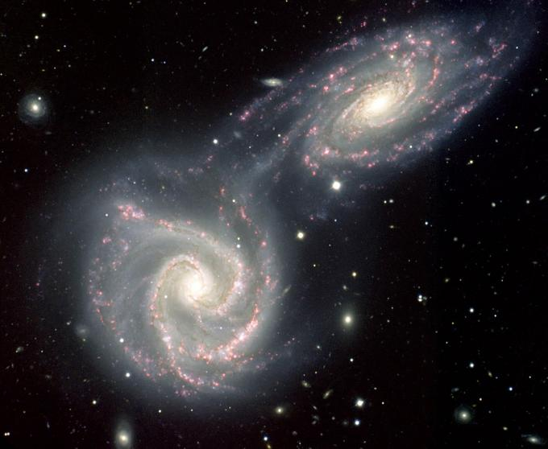

Космические явления
Первые активные шаги к познанию космоса человечество сделало совсем недавно. От запуска первого космического аппарата с первым спутником на борту прошло всего лишь каких-то 60 лет. Но за этот небольшой исторический отрывок времени удалось узнать о многих космических явлениях и провести большое количество самых разнообразных исследований.

Как ни странно с более глубоким познанием космоса перед человечеством открывается все больше загадок и явлений, которые не имеют на данном этапе ответов. Стоит отметить, что даже самое близкое космическое тело, а именно Луна еще далеко не изучена. В силу несовершенства технологий и космических аппаратов мы не имеем ответов на огромное количество вопросов, которые касаются космического пространства. Все же наш портал Kvant.Space сможет ответить на много интересующих Вас вопросов и поведать очень много интересных фактов о космических явлениях.

Самые необычные космические явления от портала
Достаточно интересным космическим явлением является галактический каннибализм. Несмотря на то, что галактики являются неживыми существами, все же с термина можно сделать вывод, что в основе его положено поглощение одной галактикой другую. Действительно, процесс поглощения себе подобных характерен не только для живых организмов, но и для галактик. Так, в настоящее время совсем недалеко от нашей галактики происходит подобное поглощение Андромедой более мелких галактик. По счету в этой галактике порядка десяти подобных поглощений. Среди галактик подобные взаимодействия достаточно распространенные. Также довольно часто кроме каннибализма планет может происходить их столкновение. При исследовании космических явлений смогли сделать вывод, что почти все изученные галактики когда-либо имели контакт с другими галактиками.

Больше информации тут